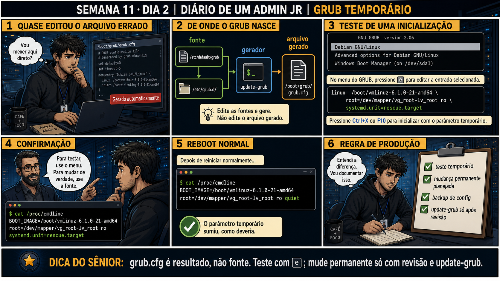

DIARIO DE UM ADMIN JR. | FASE 1 — LINUX, DO BÁSICO AO AVANÇADO
Antes de começar — 20 segundos de memória (Dia 1)
1. Ontem, qual comando separa quanto tempo do boot foi gasto no kernel e quanto foi gasto no userspace? 2. Ontem você só observou as etapas do boot, sem tocar em nada. Hoje você vai editar um parâmetro bem no início dessa cadeia, na tela do GRUB — por que fazer esse teste na tela de boot é mais seguro do que editar o arquivo grub.cfg direto?
1.systemd-analyze. 2. Porque a edição na tela do GRUB (tecla 'e') só existe na memória para AQUELE boot — se der errado, um reboot normal desfaz tudo sozinho. Editar o grub.cfg direto é mudança permanente arriscada, e pior: esse arquivo é gerado automaticamente, então a edição manual pode sumir ou ficar inconsistente na próxima atualização.
🔗 Conecta com ontem: Ontem você mapeou as seis etapas do boot sem mudar nada. Hoje
você aprende a ferramenta que ATUA numa dessas etapas — o GRUB — e a distinção mais importante que existe
nele: testar uma mudança versus tornar essa mudança permanente são duas operações completamente diferentes.
🔓 Privilégio de hoje: editar o boot com segurança, sem medo de quebrar o sistema.
Você ganha a técnica de adicionar um parâmetro temporário no menu do GRUB pra testar algo — sabendo que um
simples reboot normal desfaz tudo, sem nenhum rastro.
Semana 11 · Dia 2 | Nível Júnior
GRUB: Edição Temporária vs Permanente
grub.cfg é resultado, não fonte — teste com 'e', mude de verdade só com revisão e update-grub
ANTES DE ALTERAR, OBSERVE. DEPOIS DE ALTERAR, VALIDE.

1. O chamado
#7430PRIORIDADE BAIXA10:15aberto por: você mesmo — estudo
host: VM de laboratório · serviço: GRUB — configuração de boot
"Preciso testar um parâmetro novo de boot sem arriscar quebrar a inicialização permanentemente."
Editar /boot/grub/grub.cfg direto parece o caminho mais rápido. Por que esse arquivo específico é uma armadilha?
💡 Passa o mouse nas palavras destacadas pra ver uma dica rápida — clica se quiser a explicação completa com analogia.
2. O sênior te conta
Semana passada, outro ticket
Um colega precisava testar um parâmetro de kernel novo antes de aprovar uma mudança em produção, e foi
direto editar /boot/grub/grub.cfg — parecia mais rápido que mexer em dois arquivos e rodar
um comando. Funcionou naquele boot. Três semanas depois, uma atualização de segurança do kernel disparou
update-grub automaticamente como parte do processo de pacote — e o parâmetro "temporário"
que devia ter sumido há semanas simplesmente desapareceu sem aviso, porque nunca existiu na fonte real,
só no arquivo gerado. Ninguém lembrava mais que aquele parâmetro estava lá, e o comportamento do sistema
mudou silenciosamente. A correção não foi "lembrar de não editar grub.cfg de novo" — foi internalizar que
grub.cfg é sempre descartável, e qualquer coisa que precise sobreviver tem que morar na fonte. O ponto que
fica: se você editou o arquivo errado, sua mudança não é permanente nem temporária — ela é imprevisível.
3. Decodificador de conceitos
Clica em qualquer termo pra ver a definição completa e uma analogia do dia a dia:
4. Ferramentas e leitura da evidência
Comando / Ação
O que observar e por que importa
e no menu do GRUB
Abre a edição temporária da entrada selecionada — vale só para essa inicialização.
Ctrl+X ou F10
Inicializa com a edição temporária aplicada.
cat /proc/cmdline
Mostra os parâmetros com que o kernel atual foi inicializado — confirma se o parâmetro temporário foi aplicado.
update-grub
Regenera grub.cfg a partir de /etc/default/grub e /etc/grub.d/ — só depois de revisão.
--- teste temporário, no menu do GRUB ---
linux /boot/vmlinuz-6.1.0-21-amd64 \
root=/dev/mapper/vg_root-lv_root ro \
systemd.unit=rescue.target
Ctrl+X (inicializa com o parâmetro temporário)
$ cat /proc/cmdline
BOOT_IMAGE=/boot/vmlinuz-6.1.0-21-amd64
root=/dev/mapper/vg_root-lv_root ro
systemd.unit=rescue.target
--- depois de reiniciar normalmente ---
$ cat /proc/cmdline
BOOT_IMAGE=/boot/vmlinuz-6.1.0-21-amd64
root=/dev/mapper/vg_root-lv_root ro quiet
(o parâmetro temporário sumiu, como deveria)
5. Laboratório guiado — marca conforme for testando
Segurança: execute os testes apenas em VM descartável e confirme nomes de discos, hosts e arquivos antes de cada comando.
Ação: no menu do GRUB, pressione e para editar a entrada selecionada e observe a estrutura da linha linux.
(no menu do GRUB, tecla 'e')
linux /boot/vmlinuz-6.1.0-21-amd64 root=/dev/mapper/vg_root-lv_root ro quiet
initrd /boot/initrd.img-6.1.0-21-amd64
Resultado esperado: tela de edição mostrando a linha linux e initrd da entrada.
Por quê: essa tela edita só a cópia carregada em memória pra esse boot — nada em disco é tocado ainda.
Se o seu resultado foi diferente
a tela de edição não abre, ou o menu do GRUB nem aparece → pressione uma tecla qualquer bem no início do boot pra pausar o timeout automático do menu — em muitas VMs o menu passa rápido demais e vai direto pro boot padrão.
Ação: adicione systemd.unit=rescue.target ao final da linha linux e inicialize com Ctrl+X.
linux /boot/vmlinuz-6.1.0-21-amd64 root=/dev/mapper/vg_root-lv_root ro quiet systemd.unit=rescue.target
(Ctrl+X para inicializar)
Resultado esperado: sistema inicia em modo rescue, com uma shell de root disponível.
Ação: rode cat /proc/cmdline e confirme que o parâmetro temporário está presente.
Resultado esperado: systemd.unit=rescue.target aparece na saída.
🧑🏫 Aqui entra o Mentor (em breve): se o parâmetro não aparecer no cmdline, este é o ponto onde o chat com o Sênior-IA vai ajudar a diagnosticar a edição do menu.
Ação: reinicie normalmente (sem editar o menu) e rode cat /proc/cmdline de novo.
Resultado esperado: systemd.unit=rescue.target não aparece mais — a edição era temporária.
Cilada comum: confundir "o teste funcionou" com "a mudança está aplicada" — o teste no menu prova que o parâmetro funciona, mas não persiste sozinho.
Ação: documente: teste temporário feito, mudança permanente planejada, backup de config, update-grub só após revisão.
Resultado esperado: checklist completo reproduzindo o painel 6 da prancha de hoje.
6. Antes de ver as opções — tenta responder
🧠 Recall ativo: qual arquivo você deve editar pra mudar o GRUB de forma permanente — grub.cfg ou
/etc/default/grub?
/etc/default/grub
(e os scripts em /etc/grub.d/) são a fonte. Depois de editar a fonte, você roda
update-grub
pra regenerar o
grub.cfg.
Editar grub.cfg direto é editar o resultado, não a causa.
QUESTÃO 1 de 3
7. Questão comentada — clica numa alternativa
Você quer testar um parâmetro de boot novo (como rescue.target) só para UMA
inicialização, sem deixar rastro permanente. Qual é o procedimento correto?
💡 Analogia do Sênior para Fixar: Pressionar 'e' no menu do GRUB é como abrir o capô do carro antes de dar a partida: permite editar os parâmetros da linha do kernel apenas para aquela inicialização específica.
QUESTÃO 2 de 3 — cenário de erro real
7.1 O teste no rescue.target funcionou. Agora você quer aplicar essa mudança de forma permanente
Você já sabe que editar grub.cfg direto é desaconselhado, e que o menu do GRUB só vale para uma
inicialização.
Qual é o procedimento correto para tornar a mudança permanente?
💡 Analogia do Sênior para Fixar: O parâmetro 'init=/bin/bash' na linha do kernel é a chave mestra de emergência: pula toda a inicialização de serviços e entrega um terminal root puro direto na tela.
QUESTÃO 3 de 3 — detalhe que confunde todo iniciante
7.2 "Se eu editar grub.cfg direto e nunca rodar update-grub de novo, minha mudança fica pra sempre?"
Um colega argumenta que, já que ninguém mais vai tocar no servidor, editar grub.cfg direto é seguro o
suficiente.
Por que essa lógica é arriscada mesmo assim?
💡 Analogia do Sênior para Fixar: Remover as palavras 'quiet splash' no GRUB é acender a luz da oficina: desliga o logotipo bonito e mostra todas as mensagens reais do kernel passando na tela durante o boot.
8. Procedimento profissional
Para testar algo, use o menu do GRUB: pressione e, edite, inicialize com Ctrl+X.
Confirme o teste com cat /proc/cmdline após o boot.
Reinicie normalmente e confirme que o parâmetro temporário sumiu.
Se a mudança deve ser permanente, edite /etc/default/grub — nunca grub.cfg direto.
Revise a mudança, rode update-grub, e documente o que foi alterado e por quê.
Prevenção
Adicione um comentário de cabeçalho pessoal antes de qualquer sessão de teste no menu do
GRUB ("estou testando X, se der ruim: reboot normal desfaz"), e trate qualquer edição em
/boot/grub/grub.cfg encontrada durante uma investigação como um sinal de alerta — nunca como
configuração válida a manter. O próprio cabeçalho gerado no topo do arquivo ("DO NOT EDIT THIS FILE") já é
a documentação oficial dessa regra.
9. Validação e encerramento
O teste foi feito no menu do GRUB, nunca editando grub.cfg direto.
cat /proc/cmdline confirmou o parâmetro temporário durante o teste.
Um reboot normal confirmou que a edição temporária foi descartada.
Qualquer mudança permanente segue via /etc/default/grub + update-grub, com revisão prévia.
Rollback e limites
A edição temporária no menu do GRUB já é o próprio mecanismo de rollback — um
reboot normal desfaz tudo sozinho. Para mudanças permanentes, faça backup de /etc/default/grub antes de
editar, para poder reverter com update-grub caso algo saia errado.
💡 Sobre repetição espaçada: "edite a fonte, não o resultado gerado" conecta
com a Semana 3 (não editar /etc/passwd manualmente, usar as ferramentas certas) — mesma disciplina de nunca
mexer direto no artefato final. O Anki vai conectar os dois.
10. Resposta final
Alternativa correta: A. Nesta aula, o procedimento certo foi usar o
menu do GRUB com e e Ctrl+X para um teste de uma única inicialização, sabendo que um reboot normal
desfaz tudo. O ponto central do caso é este: grub.cfg é resultado, não fonte — mude de verdade só com
revisão e update-grub.
🔓 O que você desbloqueou hoje
Capacidade de testar mudanças de boot com segurança, sem medo de deixar o
sistema num estado permanente indesejado. Amanhã você entra de fato no modo rescue que testou hoje — e
aprende o que fazer (e o que NÃO esperar) uma vez lá dentro.